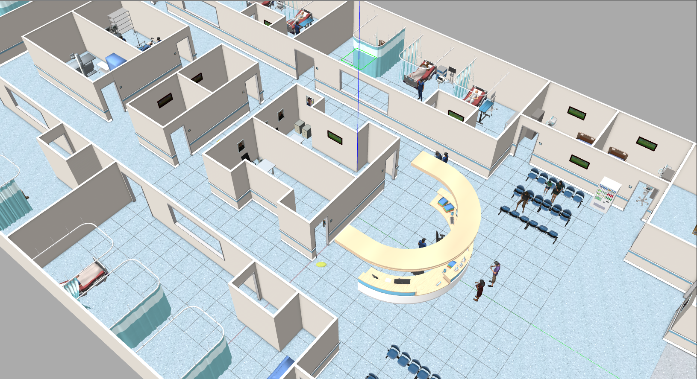
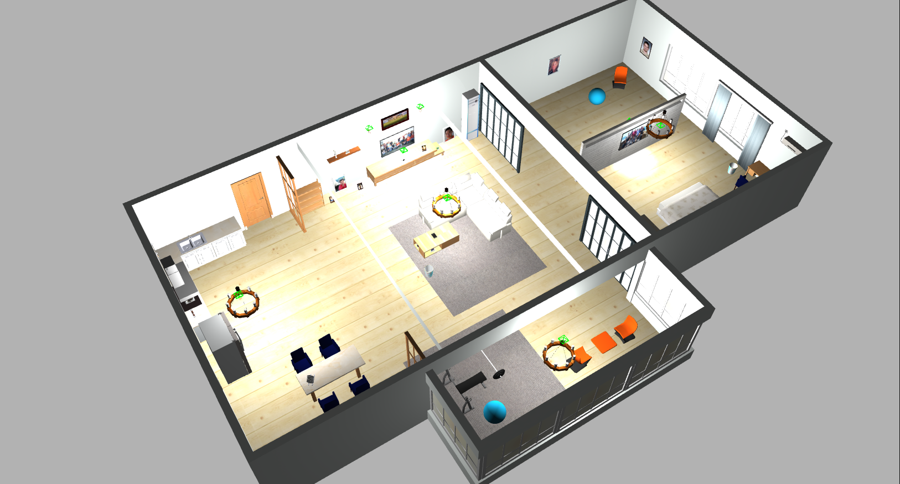
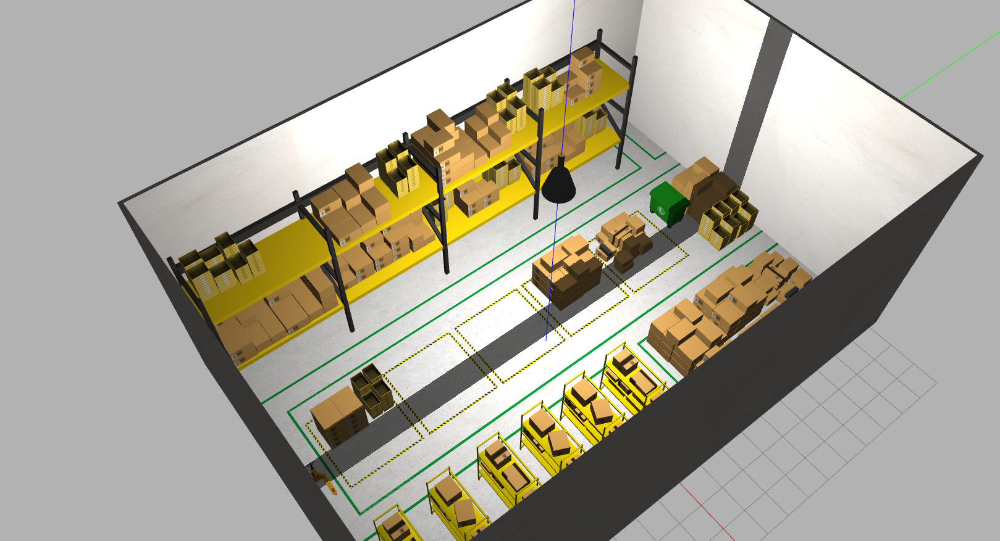
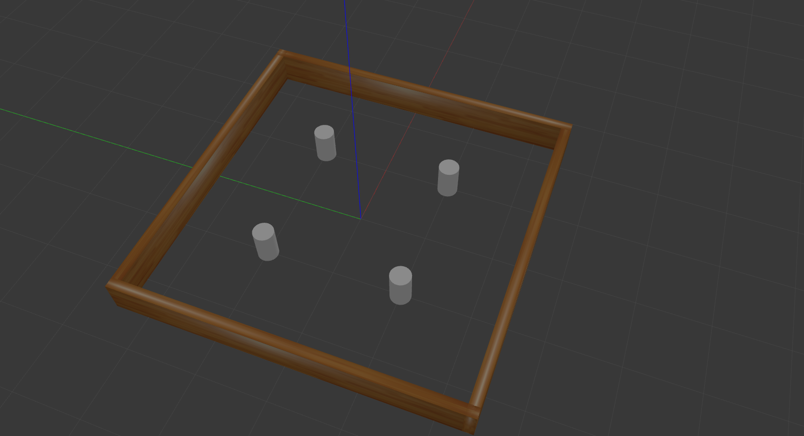
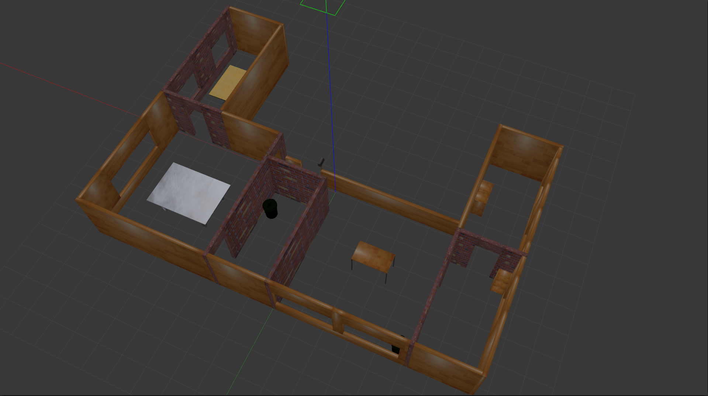
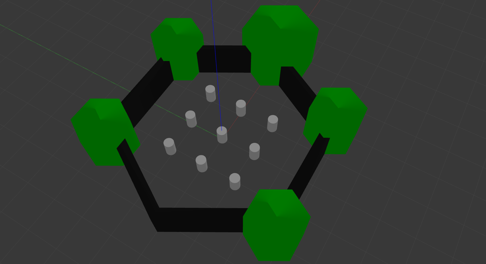
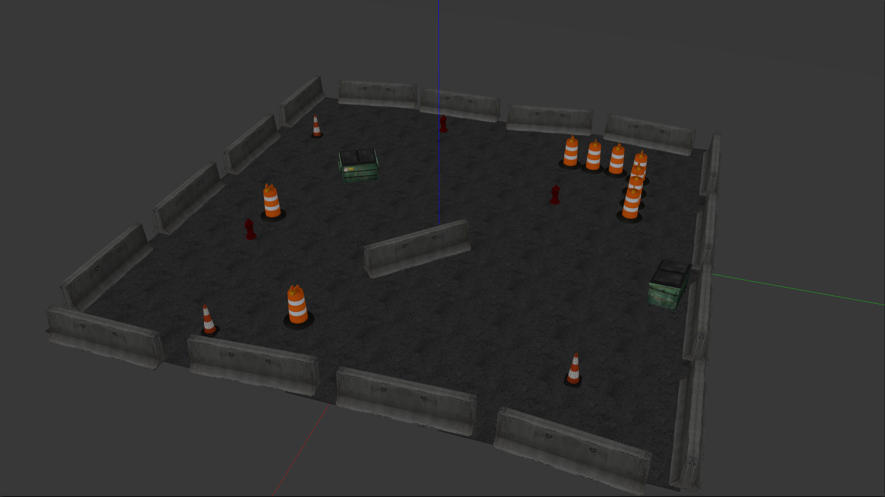

Gazebo World¶


This repository contains several Gazebo worlds, which are valuable for testing robots or agents in both indoor and outdoor environments.
🐳 Start Container¶
Make sure your system meets the system requirements and have followed the setup instructions before using this workspace.
Run the following commands in a Ubuntu desktop environment. If you are using a remote server, make sure you're using a terminal within a remote desktop session (e.g., VNC) instead of SSH (i.e., don't use ssh -X or ssh -Y).
cd ~/ros2-essentials/gazebo_world_ws/docker
docker compose build
xhost +local:docker
docker compose up -d
# The initial build will take a while, please wait patiently.
If your user's UID is
1000, you may replace thedocker compose buildcommand withdocker compose pull.
The commands in the following sections assume that you are inside the Docker container:
If the initial build somehow failed, run:
Once you have finished testing, you can stop and remove the container with:
🌱 Structure 🌱¶
ros2-essentials
├── gazebo_world_ws
| ├── .devcontainer
| ├── docker
| ├── figure
| ├── src
| | ├── aws-robomaker-hospital-world
| | ├── aws-robomaker-small-house-world
| | ├── aws-robomaker-small-warehouse-world
| | ├── citysim
| | ├── clearpath_playpen
| | ├── gazebo_launch
| | └── turtlebot3_gazebo
| ├── .gitignore
| └── README.md
└── ...
🚩 How to use 🚩¶
Available target worlds: - aws_hospital - aws_small_house - aws_warehouse - citysim - clearpath_playpen - turtlebot3
The turtlebot3 offers multiple worlds to choose from. For more information, you can refer to the launch file located at turtlebot3.launch.py in the gazebo_launch package.
Use in gazebo_world_ws container¶
Normally, you wouldn’t want to use it inside the gazebo_world_ws container, since this workspace doesn’t include any robots by default. However, we still provide the Dockerfile for this workspace, you can use it if you have specific requirements.
# Build the workspace
cd /home/ros2-essentials/gazebo_world_ws
colcon build --symlink-install
source /home/ros2-essentials/gazebo_world_ws/install/setup.bash
# Launch the world
# Replace <target world> with the name of the world you wish to launch.
ros2 launch gazebo_launch <target world>.launch.py
# or launch turtlebot3 worlds, such as:
ros2 launch gazebo_launch turtlebot3.launch.py gazebo_world:=turtlebot3_dqn_stage3.world
Use in other container/workspace¶
1. Compile packages¶
To use it in other containers, remember to compile gazebo_world_ws first. Generally, you can compile it using other containers directly, as the required dependencies for these packages should already be installed in all workspaces. You should only use the Docker environment provided by gazebo_world_ws if you encounter issues with compilation or path settings.
2. Source the local_setup.bash¶
Add the following lines into .bashrc file.
# Source gazebo_world_ws environment
GAZEBO_WORLD_WS_DIR="${ROS2_WS}/../gazebo_world_ws"
if [ ! -d "${GAZEBO_WORLD_WS_DIR}/install" ]; then
echo "gazebo_world_ws has not been built yet. Building workspace..."
cd ${GAZEBO_WORLD_WS_DIR}
colcon build --symlink-install
cd -
echo "gazebo_world_ws built successfully!"
fi
source ${GAZEBO_WORLD_WS_DIR}/install/local_setup.bash
3. Launch gazebo in the launch file¶
Add the code into your launch file.
Remember to replace the
<target world>with the one you want.
from launch import LaunchDescription
from launch.actions import IncludeLaunchDescription, DeclareLaunchArgument
from launch.substitutions import PathJoinSubstitution, LaunchConfiguration
from launch_ros.substitutions import FindPackageShare
ARGUMENTS = [
DeclareLaunchArgument(
"launch_gzclient",
default_value="True",
description="Launch gzclient, by default is True, which shows the gazebo GUI",
),
]
def generate_launch_description():
...
# Launch Gazebo
launch_gazebo = IncludeLaunchDescription(
PathJoinSubstitution(
[
FindPackageShare("gazebo_launch"),
"launch",
"<target world>.launch.py",
],
),
launch_arguments={
"launch_gzclient": LaunchConfiguration("launch_gzclient"),
}.items(),
)
...
ld = LaunchDescription(ARGUMENTS)
ld.add_action(launch_gazebo)
...
return ld
✨ Snapshot ✨¶
| World | Snapshot |
|---|---|
| aws_hospital |  |
| aws_small_house |  |
| aws_warehouse |  |
| citysim |  |
| turtlebot3_stage3 |  |
| turtlebot3_house |  |
| turtlebot3_world |  |
| clearpath_playpen |  |
🔍 Troubleshooting 🔍¶
Getting stuck when launching Gazebo¶
The first time you launch a Gazebo world might take longer because Gazebo needs to download models from the cloud to your local machine. Please be patient while it downloads. If it takes too long, like more than an hour, you can check the gzserver logs in ~/.gazebo to see where it’s getting stuck. The most common issue is using a duplicate port, which prevents Gazebo from starting. You can use lsof -i:11345 to identify which process is using the port and then use kill -9 to terminate it.
Unable to find gazebo_launch¶
Please make sure you have sourced the local_setup.bash and compiled gazebo_world_ws. If you encounter a path issue, try removing the install, build, and log folders in gazebo_world_ws and compile the workspace in your container again.